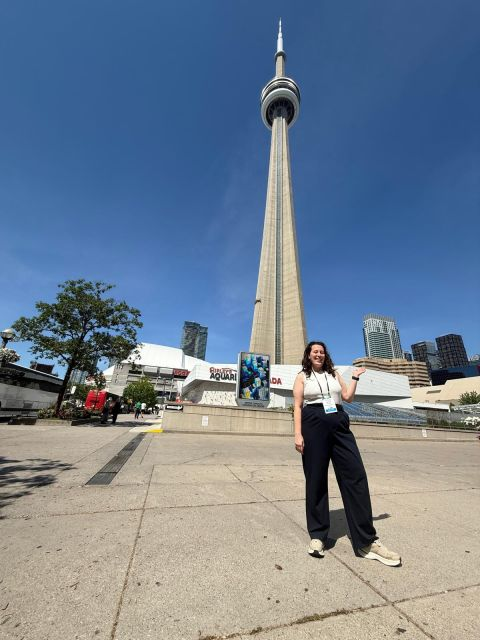

This year brought two conference opportunities that I'm genuinely grateful for, and that pushed my thinking in different directions.
The first was the European Geosciences Union General Assembly in Vienna — an incredible week of sessions, conversations, and ideas. Beyond attending, I had the opportunity to present work I've been developing at Fast Hazard: a data-agnostic approach to applying the FastFlood model that is designed to perform reliably anywhere in the world, including in data-sparse environments. The approach prioritises speed and accuracy while remaining scalable and reproducible across diverse hydrological contexts. The poster I presented explored how this methodology was applied to case study locations across Canada under various input scenarios, and discussed its potential for operational early warning and national-scale risk assessment.
Later in the year, I attended the ISPRS symposium in Toronto. We were invited to organise a tutorial on the FastFlood tool — which I was responsible for creating. I designed a session that introduced the tool, explained the underlying methodology, and walked participants through common applications in a hands-on way. Accessibility and clarity were front of mind throughout: the goal was for practitioners with varying levels of technical background to leave with something useable.
What I appreciated most about ISPRS was the perspective shift it offered. The conference approached the work I do from a strictly remote sensing angle — less the intersection of hazard and vulnerability that I usually navigate, and more the data and sensing side of the pipeline. I came away with concrete ideas about what we might be able to integrate into the FastFlood Global tool, and how to improve some of our internal workflows. A productive week in every sense.